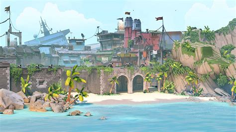

BREEZE
Breeze ressemble plus à 4 terrains vagues autour de nombreux chemins sinueux et interconnectés. Elle fera aussi bien le bonheur des joueurs de Sniper sur ces espaces comme le bonheur des joueurs qui aiment le contact et dans ses couloirs. En fonction de l’économie ou de la stratégie d’une équipe, elle devrait pouvoir se jouer de manières bien différentes.Elle dispose de deux sites, dont le site A qui se joue plutôt de loin contrairement au site B qui se joue de proche.